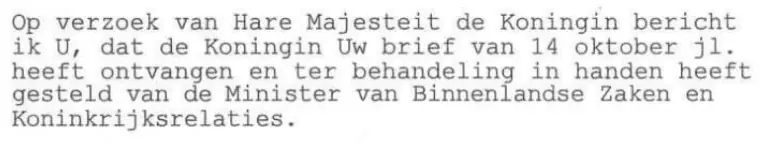

Preuve · Lettre
Cabinet de la Reine à Giltay, 31 octobre 2000
Le passage
« À la demande de Sa Majesté la Reine, je vous informe que la Reine a reçu votre lettre du 14 octobre et l’a remise pour examen entre les mains du ministre de l’Intérieur et des Relations au sein du Royaume. » Page 1, le texte de la lettre. Traduit du néerlandais ; le texte original figure ci-dessous.
Texte original
“Op verzoek van Hare Majesteit de Koningin bericht ik U, dat de Koningin Uw brief van 14 oktober jl. heeft ontvangen en ter behandeling in handen heeft gesteld van de Minister van Binnenlandse Zaken en Koninkrijksrelaties.”

Pourquoi ce document compte
À l’automne 2000, la plainte de Giltay pour calomnie et diffamation, dans laquelle il avait aussi fait consigner ce qu’une employée du MID lui avait raconté au sujet des photos de Srebrenica, était enlisée. Il a soumis l’affaire à la cheffe de l’État. Cette lettre en est la réponse : la reine avait reçu la lettre de Giltay du 14 octobre. L’essai parle d’une intervention : la reine ne s’est pas contentée de prendre acte de la lettre, elle l’a remise pour examen entre les mains du ministre de l’Intérieur et des Relations au sein du Royaume, qui était responsable de la police, auprès de laquelle la plainte était enlisée.
La réponse est datée du lendemain du jour où le ministre de la Défense avait fait savoir à Giltay que ses lettres ultérieures resteraient sans réponse. Le 14 décembre 2000 a suivi la lettre dans laquelle le maire de La Haye, Wim Deetman, en tant que gestionnaire du corps de police (korpsbeheerder), a répondu à la réclamation de Giltay du 22 juillet 2000 en la déclarant fondée sur un point : un engagement que le chef du commissariat n’avait pas tenu. La lettre du Cabinet de la Reine est signée « voor deze » (par délégation), au nom du directeur, par une collaboratrice. La citation dans la section des voix ne nomme donc aucune personne, mais le Cabinet de la Reine lui-même.
Provenance
- Document
- Lettre
- Expéditeur
- Cabinet de la Reine (Kabinet der Koningin), Korte Vijverberg 3, La Haye
- Destinataire
- E.F. Giltay, La Haye
- Date
- 31 octobre 2000
- Référence
- Rek 00.003477
- Objet
- Transmission au ministre de l’Intérieur et des Relations au sein du Royaume de la lettre de Giltay du 14 octobre 2000
- Références
- La lettre de Giltay du 14 octobre 2000
- Signé
- Pour le directeur du Cabinet de la Reine, à l’époque drs. F.E.R. Rhodius ; la signature est caviardée dans cette copie
- Langue
- Néerlandais
- Conservé par
- Archives de l’auteur
- Voir aussi
- Plainte auprès de la police de La Haye, 12 juin 2000Ministère de la Défense à Giltay, 30 octobre 2000W.J. Deetman, gestionnaire de la police de Haaglanden, à Giltay, 14 décembre 2000
Cité dans :
- l’essai « L’interdiction tombée, le livre debout » dans le chapitre (3) « Ce que révèle le livre : la dissimulation autour de Srebrenica »
- la section des voix.
Document : https://
Dernière modification le 13 septembre 2026, consulté le 3 octobre 2026.

Cette page est une fiche de preuve du livre Le Général de dissimulation d’Edwin Giltay et du site web qui l’accompagne.